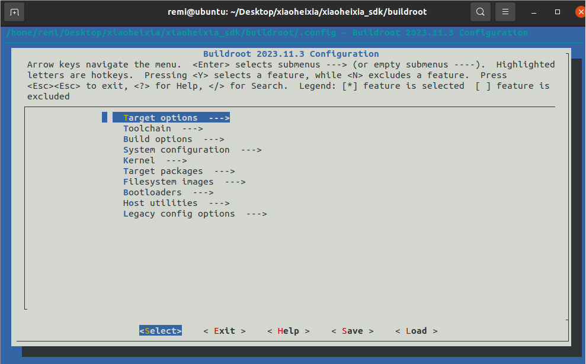

记录|嵌入式Linux开发
前言
典型的嵌入式linux开发无板上编程环境，只能在主机/虚拟机部署SDK后利用交叉编译具体的程序。
本文记录一些开发微雪Luckfox-Pico时候的经历与知识
设备配置
lsusb | grep Video*
ifconfig:interface config
Docker的使用
- 关于镜像的命令
1
2
3
4docker pull luckfoxtech/luckfox_pico:1.0 #从 Docker Hub 下载镜像。
docker images #列出本地所有的镜像。
docker rmi luckfoxtech/luckfox_pico:1.0 #删除本地一个或多个镜像。
docker search [image] #在 Docker Hub 上搜索镜像。 - 关于容器的命令
列出容器：新建容器：1
2docker ps #列出当前运行的容器。
docker ps -a #列出所有的容器，包括停止的。1
sudo docker run -it --name luckfox -v /home/ubuntu/luckfox-pico:/home luckfoxtech/luckfox_pico:1.0 /bin/bash #创建并运行一个容器
1
2
3
4
5
6
7docker start 1758 #启动一个停止的容器。
docker stop 1758 #停止一个运行中的容器。
docker restart 1758 #重启一个容器。
docker exec -it 1758 ls #在运行中的容器中执行命令。
docker exec -it 1758 bash #进入一个已经打开的容器
exit #退出
docker rm 1758 #删除一个或多个容器。使用adb传输文件：1
2
3
4
5
6
7
8
9```
## ADB的使用
ADB（Android Debug Bridge），即安卓调试桥。
启用adb：
```shell
adb shell
adb devices # 列出adb设备与其特征码
adb -s d48936ed7d1551fc shell # 连接指定的adb设备shell
adb connect 172.32.0.93 # 连接指定IP的adb设备shell1
2
3
4
5
6
7
8
9
10上传文件
adb push .\adb-test.txt /
或者
adb -s 172.32.0.93:5555 push adb-test.txt /
上传文件夹
adb push .\adb-test\ /
下载文件
adb pull .\adb-test.txt /
常用命令
网络类
iw:一个 Linux 命令行工具，用于配置和管理无线网络接口。它是 Wireless-Extensions 和 nl80211 接口的用户空间工具，用于与无线设备进行交互。1
iw dev wlan0 scan | grepSSID
udhcpc:是一个轻量级的 DHCP 客户端工具，用于向 DHCP 服务器请求 IP 地址、子网掩码、网关等网络配置信息。1
udhcpc -i wlan0
外设类
在Linux中，一切皆是文件，外设也不例外，每个外设都被抽象为一个文件供系统调用。这些文件的名称通常包含外设名称和外设编号。
IIC
查看系统存在的 I2C 总线:1
ls /sys/bus/i2c/devices/
查看i2c-0接口上的设备1
i2cdetect -y -r 0
-y 选项表示在扫描时不需要用户确认。
-r 0 表示使用 I2C 总线编号为 0。
VIDEO
V4L2，全称 Video for Linux 2，是Linux操作系统上用于支持视频设备的内核框架。它提供了一组 AP I和驱动程序接口，使用户空间应用程序能够与各种视频设备（如摄像头、电视卡等）进行交互。V4L2 是 Linux 内核的一部分，用于处理视频输入和输出。
查看视频设备节点及相关信息：1
2
3
4ls /dev/video* #查看挂载在系统的设备节点
v4l2-ctl --list-devices #查看v412的设备节点
v4l2-ctl --device=/dev/video0 --list-formats-ext #查看设备支持的格式
v4l2-ctl -D -d /dev/video0 --list-formats-ext #查看设备支持的格式（详细）
自存：一些常用的命令
1 | killall app2 |
LuckFox Pico
小黑侠2-Linux遥控器
是一个基于Linux的无人机遥控器，资源丰富，便于开发学习。1
2
3
4
5
6
7
8
9
10
11
12
13
14
15CPU：RV1108G
RAM：128MB
FLASH：SPI NOR / GD25Q256e 32MB
WIFI：AR1021X
屏幕：240x240
电池：未知mAh
系统：Linux3.10
大气压计：DSP310 I2C3 地址 0x76
地磁传感器：IST8310 I2C1 地址 0x0E
IMU: ICM20602 /dev/spi0
GNSS模块：/dev/ttyS0 波特率：115200
按键：已经适配好，通过evtest可以读到键值
侧边编码器：已经适配好，通过evtest可以读到键值
摇杆：cat /sys/bus/iio/devices/iio:device0/in_voltage*_raw 根据ADC值判断
波轮：cat /sys/bus/iio/devices/iio:device0/in_voltage*_raw 根据ADC值判断
编译SDK
在群主网站中下载编译固件所需的SDK。1
7z x xiaoheixia_sdk.7z
在当前群主发布的SDK版本中，需要更改两个地方，在xiaoheixia_sdk/kernel/arch/arm/boot/dts删除一个重复的dtb及更改其makefile1
2find . -name "*xianlee2*"
rm rv1108-xiaoheixia-xianlee2.dtb1
2cat Makefile | grep -n xianlee2
# 大概会输出：210: rv1108-xiaoheixia-xianlee2.dtb 然后把Makefile中210这一行以及其上一行的反斜杠'\'删掉即可
添加驱动
添加软件
进入buildroot文件夹中1
make menuconfig # 打开图形化配置页面
有可能会报错，这只是因为缺少库文件，apt安装即可，成功后页面如下：

按下/可以进入搜索状态，可以安装aplay、ffmpeg、minicom等
修改开机第一屏
在/xiaoheixia_sdk/kernel/drivers/video/logo1
2
3jpegtopnm guzi240.jpg > guzi240.pnm
pnmquant 224 guzi240.pnm > guzi2401.pnm
pnmtoplainpnm guzi2401.pnm > logo_linux_clut224.ppm
开机软件
如果需要将软件和脚本写在固件里的话，可以在/home/remi/Desktop/xiaoheixia/xiaoheixia_sdk/buildroot/board/xiaoheixia中创建文件
编译固件
- 执行develop_init_for_ubuntu20.04.sh配置环境
- ./build.sh all 编译固件
- 编译完成后固件输出在rockimg/Image-xiaoheixia/
测试
摇杆与方向舵
X方向为：/sys/bus/iio/devices/iio:device0/in_voltage4_raw
Y方向为：/sys/bus/iio/devices/iio:device0/in_voltage5_raw。
测试脚本：1
2
3
4
5
6
7
8
9
10
11
12
13
14
15
16
17
18
19
20
21
22
23
24
25
26
27
# Device path
DEVICE_PATH="/sys/bus/iio/devices/iio:device0"
# Check if the device path exists
if [ ! -d "$DEVICE_PATH" ]; then
echo "Device path does not exist: $DEVICE_PATH"
exit 1
fi
# Function to read all voltage channels
read_voltages() {
index=0
for voltage_file in $DEVICE_PATH/in_voltage*_raw; do
voltage=$(cat $voltage_file)
printf "\033[%d;0H%-20s: %s\n" "$index" "$(basename $voltage_file)" "$voltage"
index=$((index + 1))
done
}
# Clear the screen and enter an infinite loop to read and display voltage values
printf "\033c"
while true; do
read_voltages
sleep 0.1 # Read every 0.1 seconds
done气压计
i2c基础工具使用：测试脚本：1
2
3i2cdump -f -y 3 0x76 # 查询所有寄存器数据
i2cset -fy 3 0x76 0x08 0xc7 b # 设定为连续转换模式
i2cget -fy 3 0x76 0x03 # 查询指定寄存器的值1
2
3
4
5
6
7
8
9
10
11
12
13
14
15
16
17
18
19
20
21
22
23
24
25
26
27
28
29
30
31
32
33
34
35
36
37
38
39
40
41
42
43
44
45
46
I2C_BUS=3
DSP310_ADDR=0x76
# Function to read from DSP310
read_pressure() {
# Reading raw pressure data from the correct register
RAW_PRESSURE_DATA=$(i2cget -y $I2C_BUS $DSP310_ADDR 0x00 b)
RAW_PRESSURE_DATA2=$(i2cget -y $I2C_BUS $DSP310_ADDR 0x01 b)
RAW_PRESSURE_DATA3=$(i2cget -y $I2C_BUS $DSP310_ADDR 0x02 b)
# Combine the raw data into one value
RAW_PRESSURE=$(( ($RAW_PRESSURE_DATA << 16) | ($RAW_PRESSURE_DATA2 << 8) | $RAW_PRESSURE_DATA3 ))
# Convert raw pressure data to decimal
RAW_PRESSURE=$((RAW_PRESSURE & 0xFFFFFF))
# Move the cursor to the top left and print pressure
printf "\033[H"
echo "Pressure: $RAW_PRESSURE"
}
read_temperature() {
# Reading raw temperature data from the correct register
RAW_TEMP_DATA=$(i2cget -y $I2C_BUS $DSP310_ADDR 0x03 b)
RAW_TEMP_DATA2=$(i2cget -y $I2C_BUS $DSP310_ADDR 0x04 b)
RAW_TEMP_DATA3=$(i2cget -y $I2C_BUS $DSP310_ADDR 0x05 b)
# Combine the raw data into one value
RAW_TEMP=$(( ($RAW_TEMP_DATA << 16) | ($RAW_TEMP_DATA2 << 8) | $RAW_TEMP_DATA3 ))
# Convert raw temperature data to decimal
RAW_TEMP=$((RAW_TEMP & 0xFFFFFF))
# Move the cursor to the second line and print temperature
printf "\033[2;H"
echo "Temperature: $RAW_TEMP"
}
# Infinite loop to read pressure and temperature continuously
while true; do
read_pressure
read_temperature
sleep 0.1 # Delay for 0.1 second
doneLED灯
1
2
3
4echo 4 > /sys/class/gpio/export
echo out > /sys/class/gpio/gpio4/direction
echo 1 > /sys/class/gpio/gpio4/value
echo 0 > /sys/class/gpio/gpio4/value蜂鸣器
震动马达
远程ssh连接
wpa_cli scan1
2
3
4
5dropbearkey -t rsa -f /etc/dropbear/dropbear_rsa_host_key
dropbear -E
```
### 配置WiFi
wpa_cli scan_results
wpa_cli add_network
wpa_cli set_network 0 ssid “\”Rua\””
wpa_cli set_network 0 psk “\”20030115\””
wpa_cli enable_network 0
wpa_cli save_config
wpa_cli status
wpa_cli quit其中1
2
3
4
5
6
7
8
9
10
11
12
13
14
15
16
17
18
19
20
21## 网络管理
### `wpa_cli` 和 `wpa_supplicant` 详解
`wpa_cli` 和 `wpa_supplicant` 是与WiFi网络连接和管理密切相关的两个重要工具。下面将详细介绍它们的功能和关系。
#### `wpa_supplicant`
`wpa_supplicant` 是一个广泛使用的工具，用于管理无线网络连接。它支持各种无线安全协议，包括 WPA 和 WPA2。它的主要功能包括：
- **无线网络扫描和连接**：`wpa_supplicant` 可以扫描可用的无线网络并连接到指定的网络。
- **安全管理**：支持多种安全协议（WEP, WPA, WPA2, WPA3）。
- **身份验证**：支持多种身份验证方式（如 PSK, EAP）。
- **动态配置**：支持动态配置网络参数（如动态 IP 分配）。
通常，`wpa_supplicant` 以后台守护进程的形式运行，持续管理无线网络连接。
**配置文件**：`wpa_supplicant` 使用配置文件来存储网络信息和安全凭据，通常位于 `/etc/wpa_supplicant/wpa_supplicant.conf`。
**启动命令**：一般通过以下命令启动 `wpa_supplicant`：
```sh
wpa_supplicant -B -i interface -c /path/to/wpa_supplicant.conf-B表示以后台进程运行，-i指定无线接口，-c指定配置文件。
wpa_cli
wpa_cli 是 wpa_supplicant 的命令行控制工具。它用于与正在运行的 wpa_supplicant 进行交互，执行各种命令来管理和查询无线网络连接状态。
功能：
- 网络管理：添加、移除、启用和禁用无线网络。
- 状态查询：查询当前的连接状态、扫描结果、配置参数等。
- 动态配置：实时更改网络参数而无需重启
wpa_supplicant。 - 调试和诊断：获取详细的调试信息，帮助诊断连接问题。
常用命令：
scan：触发无线网络扫描。scan_results：显示扫描结果。add_network：添加一个新的网络配置。set_network <network_id> <parameter> <value>：设置网络参数。enable_network <network_id>：启用指定网络。disable_network <network_id>：禁用指定网络。status：显示当前连接状态。quit：退出wpa_cli会话。list_networksremove_network
wpa_cli 和 wpa_supplicant 的关系
- 主从关系：
wpa_supplicant是实际管理无线连接的主程序，wpa_cli作为一个客户端工具，通过与wpa_supplicant进行交互来执行各种网络管理和查询任务。 - 通信机制：
wpa_cli通过 UNIX 套接字与wpa_supplicant进行通信。wpa_supplicant运行时会创建一个控制接口（通常在/var/run/wpa_supplicant目录下），wpa_cli通过该接口发送命令和接收响应。
例子
以下是一个使用 wpa_cli 管理无线连接的典型例子：
启动
wpa_supplicant:1
sudo wpa_supplicant -B -i wlan0 -c /etc/wpa_supplicant/wpa_supplicant.conf
使用
wpa_cli扫描网络并连接:1
2
3
4
5
6
7
8
9
10wpa_cli scan
sleep 1
wpa_cli scan_results
wpa_cli add_network
wpa_cli set_network 0 ssid "\"WIFI6_TEST\""
wpa_cli set_network 0 psk "\"1234567890\""
wpa_cli enable_network 0
wpa_cli save_config
wpa_cli status
wpa_cli quit移植LVGL
测试屏幕：
1
2cat /dev/urandom > /dev/fb0 #花屏
cat /dev/zero > /dev/fb0 #清屏配置编译LVGL的编译器：
1
CC = /home/dikle/桌面/luckfox/luckfox-pico/tools/linux/toolchain/\
在进行LVGL的开发时，需要注意各个部件的生命周期，如定时器，离开界面后记得销毁。
一些功能
- 关于开机自启
在/etc/init.d下面写一个开机启动脚本，名称为S<**><\xxxx>，星号为数字:决定该脚本的运行优先级，xx为自定义的名称。实际上，这些脚本是由同级目录下的rcS脚本遍历执行的。
自定义脚本文件S60lvgl_startup：1
2
3
4
5
6
7
8
9
10
11
12
13
14
15
16
17
18
19
20
21
22
23
24
25
26
27
28
29
30
31
32
33
34
35
36
37
38
39
40
41
### BEGIN INIT INFO
# Provides: lvgl_startup
# Required-Start: $remote_fs $syslog
# Required-Stop: $remote_fs $syslog
# Default-Start: 2 3 4 5
# Default-Stop: 0 1 6
# Short-Description: Start /root/demo at boot time
# Description: Enable service provided by /root/demo.
### END INIT INFO
case "$1" in
start)
echo "Starting lvgl_startup"
/root/demo &
;;
stop)
echo "Stopping lvgl_startup"
killall /root/demo
;;
restart)
echo "Restarting lvgl_startup"
killall /root/demo
/root/demo &
;;
status)
if pgrep -f /root/demo > /dev/null
then
echo "lvgl_startup is running"
else
echo "lvgl_startup is not running"
fi
;;
*)
echo "Usage: /etc/init.d/S60lvgl_startup {start|stop|restart|status}"
exit 1
;;
esac
exit 0rcS文件：1
2
3
4
5
6
7
8
9
10
11
12
13
14
15
16
17
18
19
20
21
22
23
24
25
26
# Start all init scripts in /etc/init.d
# executing them in numerical order.
#
for i in /etc/init.d/S??* ;do
# Ignore dangling symlinks (if any).
[ ! -f "$i" ] && continue
case "$i" in
*.sh)
# Source shell script for speed.
(
trap - INT QUIT TSTP
set start
. $i
)
;;
*)
# No sh extension, so fork subprocess.
$i start
;;
esac
done - 查询电量
1
cat /sys/class/power_supply/battery/capacity
- 查找错误
1
dmesg | grep -i 'error'
- 读取GPS报文
1
cat /dev/ttyS0
- 设定系统时间
1
2
3
4
5
6
7
8date -s "2024-08-01 11:01:26"
wget -qO- http://worldtimeapi.org/api/timezone/Asia/Shanghai | awk -F'\"datetime\":\"' '{print $2}' | awk -F'\"' '{print $1}' # 获取网络时间
wget -qO- http://worldtimeapi.org/api/timezone/Asia/Shanghai | awk -F '\"datetime\":\"' '{print $2}' | awk -F 'T' '{print $1}' # 获取网络年月日
wget -qO- http://worldtimeapi.org/api/timezone/Asia/Shanghai | awk -F '\"datetime\":\"' '{print $2}' | awk -F 'T' '{print $2}' | awk -F '.' '{print $1}' # 获取网络24进制时间
- awk -F ‘分隔符’ ‘{动作}’
LVGL鼠标显示
移植于luckypico的LVGL例程。1
2
3
4
5
6
7
8
9
10
11
12
13
14
15
16
17
18
19
20
21
22
23
24
25
26
27
28
29
30
31
32
33
34
35
36
37
38
39
40
41
42
43
44
45
46
47
48
49
50
51void control_with_adc()
{
int x_adc = read_adc_value(ADC_X_PATH);
int y_adc = read_adc_value(ADC_Y_PATH);
static int x = 70, y = 120;
if (x_adc < 0 || y_adc < 0)
{
// 读取错误，跳过本次循环
return;
}
int move = 0;
if (x_adc > ADC_CENTER_VALUE + ADC_THRESHOLD)
{
x -= 1;
if (x < 0)
x = 0;
move = 1;
}
else if (x_adc < ADC_CENTER_VALUE - ADC_THRESHOLD)
{
x += 1;
if (x > 226)
x = 226;
move = 1;
}
if (y_adc > ADC_CENTER_VALUE + ADC_THRESHOLD)
{
y -= 1;
if (y < 0)
y = 0;
move = 1;
}
else if (y_adc < ADC_CENTER_VALUE - ADC_THRESHOLD)
{
y += 1;
if (y > 200)
y = 200;
move = 1;
}
if (move)
{
lv_obj_set_pos(cursor, x, y);
}
lv_label_set_text_fmt(label3, "%d %d", x, y);
}C语言
1
2
3
4
5
6
7
8
9
10
11
12
13
14
15
16
17
18
19
20
21
22
23
24
25
26
27
28
29
30
31
32
33
34
35
36
37
38
39char wifi_info_mesg[64];
snprintf(wifi_info_mesg, sizeof(wifi_info_mesg), "SSID: %s\nKey Management: %s\nIP Address: %s\n", \
bufstatus->ssidfer, status->wifi_generation, status->ip_address);
info_msgbox(wifi_info_mesg,"Time Info");
typedef struct {
char bssid[32];
int freq;
char ssid[32];
int id;
char mode[32];
int wifi_generation;
char pairwise_cipher[32];
char group_cipher[32];
char key_mgmt[32];
char wpa_state[32];
char ip_address[32];
char address[32];
} WifiStatus;
void read_wifi_status(WifiStatus *status) {
char buffer[BUFFER_SIZE];
FILE *fp = popen("wpa_cli status", "r");
if (fp == NULL) {
perror("popen failed");
return;
}
while (fgets(buffer, sizeof(buffer), fp) != NULL) {
if (strncmp(buffer, "bssid=", 6) == 0) {
sscanf(buffer + 6, "%31s", status->bssid);
} else if (strncmp(buffer, "freq=", 5) == 0) {
sscanf(buffer + 5, "%d", &status->freq);
} else if (strncmp(buffer, "ssid=", 5) == 0)
}
pclose(fp);
}Ui设计
1
2
3
4
5
6
7
8
9
10
11
12
13
14
15
16
17
18
19
20
21
22
23
24
25
26
27
28
29
30
31
32
33
34
35
36
37
38
39
40
41
42
43
44
45
46
47
48
49
50
51
52
53
54
55
56
57
58
59
60
61
62
63
64
65
66
67
68
69
70
71
static bool btn_pressed = false; // 用于跟踪按钮状态
// 定时器回调函数，用于重置按钮状态
static void reset_btn_pressed(lv_timer_t *timer)
{
btn_pressed = false; // 重置按钮状态
lv_timer_del(timer); // 删除定时器
}
static void btn_event_cb(lv_event_t *e)
{
lv_event_code_t code = lv_event_get_code(e);
lv_obj_t *btn = lv_event_get_target(e);
uint32_t id = lv_btnmatrix_get_selected_btn(btn);
if (code == LV_EVENT_VALUE_CHANGED)
{
if (!btn_pressed) // 检查按钮是否已经被按下
{
btn_pressed = true; // 标记按钮已被按下
const char *btn_text = lv_btnmatrix_get_btn_text(btn, lv_btnmatrix_get_selected_btn(btn));
if (strcmp(btn_text, "返回") == 0) /* 切换到功能1界面 */
{
ui_Home_screen_init();
lv_scr_load_anim(ui_Home, LV_SCR_LOAD_ANIM_FADE_ON, 200, 0, true);
}
lv_timer_create(reset_btn_pressed, 100, NULL);
}
}
}
extern unsigned int back_ground_value;
static void create_function_widgets(lv_obj_t *parent)
{
// 设置背景颜色
lv_obj_set_style_bg_color(parent, lv_color_hex(back_ground_value), 0);
// 创建底部按钮
static const char *btn_map[] = {"返回", ""};
lv_obj_t *btnm = lv_btnmatrix_create(parent);
lv_btnmatrix_set_map(btnm, btn_map);
lv_obj_set_size(btnm, lv_pct(90), lv_pct(25));
lv_obj_align(btnm, LV_ALIGN_BOTTOM_MID, 0, -40);
lv_obj_add_event_cb(btnm, btn_event_cb, LV_EVENT_ALL, NULL);
// 设置按钮样式
lv_obj_set_style_text_font(btnm, &lv_font_simsun_16_cjk, 0);
// lv_obj_set_style_bg_color(btnm, lv_color_hex(0x34495e), LV_PART_MAIN);
lv_obj_set_style_bg_color(btnm, lv_color_hex(0xDBDBDB), LV_PART_MAIN);
lv_obj_set_style_text_color(btnm, lv_color_hex(0xecf0f1), LV_PART_MAIN);
lv_obj_set_style_border_width(btnm, 0, LV_PART_MAIN);
lv_obj_set_style_radius(btnm, 10, LV_PART_MAIN);
lv_obj_set_style_bg_color(btnm, lv_color_hex(0x3498db), LV_PART_ITEMS);
lv_obj_set_style_radius(btnm, 5, LV_PART_ITEMS);
}
void ui_sensor_screen_init(void)
{
ui_sensor = lv_obj_create(NULL);
lv_obj_clear_flag(ui_sensor, LV_OBJ_FLAG_SCROLLABLE); /// Flags
create_function_widgets(ui_sensor);
}ui设计注意
很奇怪，键盘的坐标数值好像是从中间开始的
命令行工具
1 | remi@ubuntu:~/Desktop/xiaoheixia/xiaoheixia_sdk/kernel/arch/arm/boot/dts$ cat Makefile | grep -n xianlee2 |
注意
配置VSCode连接Linux
C:\ProgramData\ssh